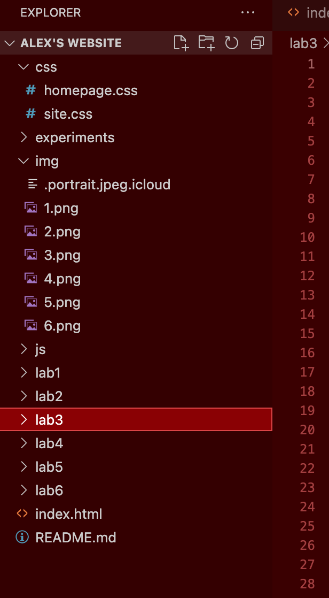
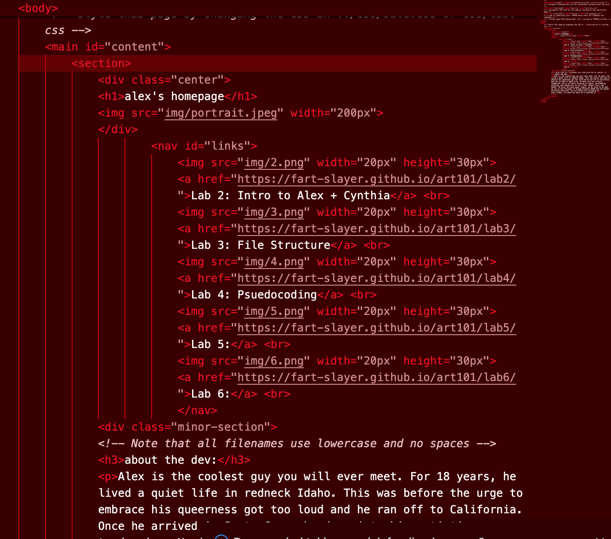
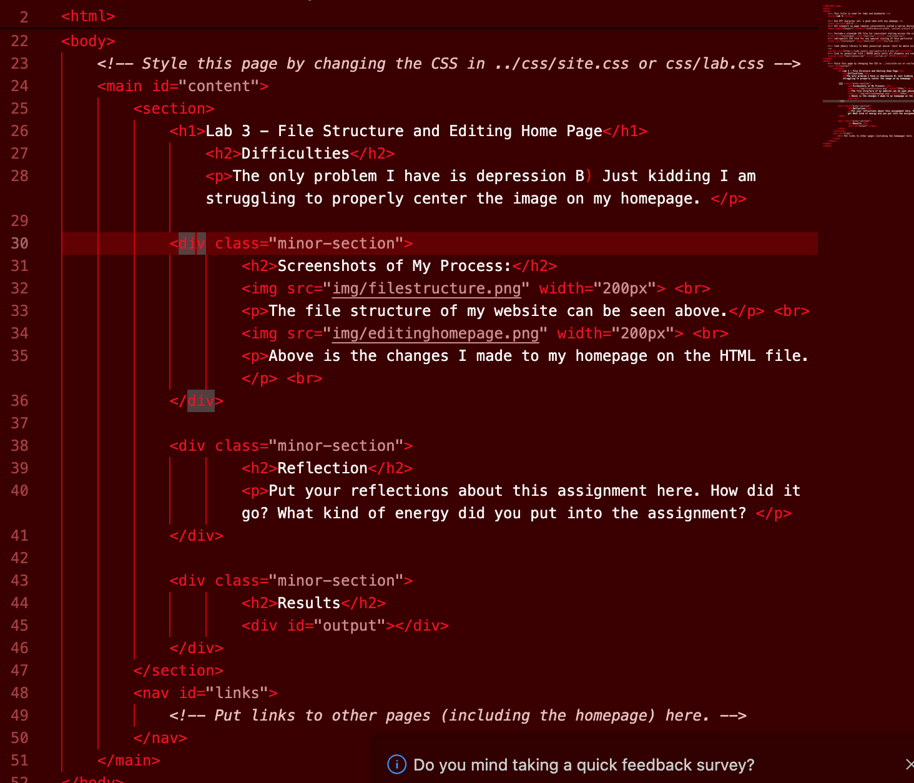
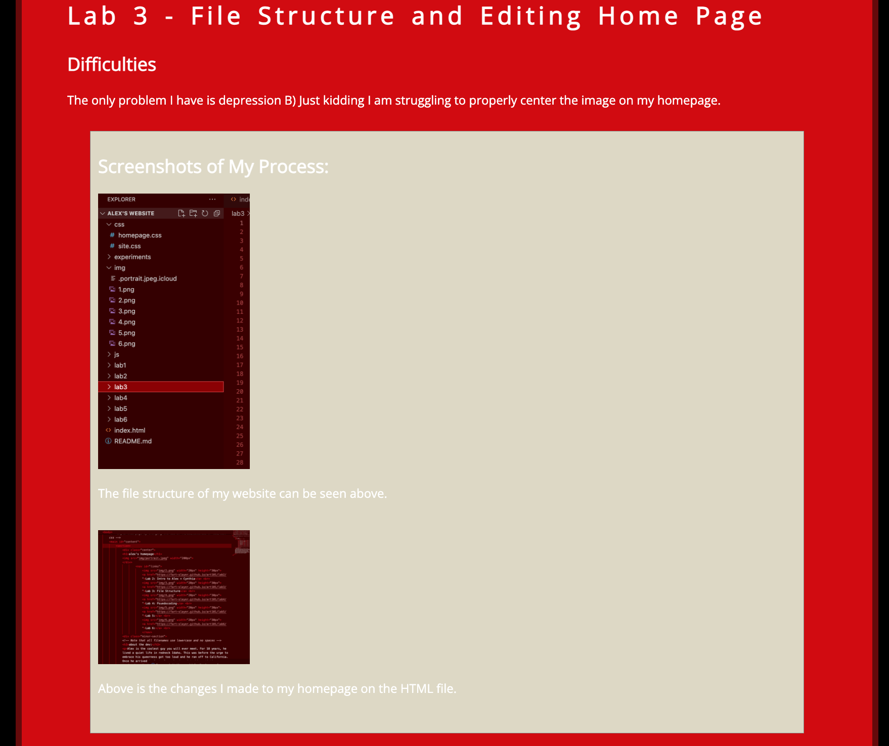

Lab 3 - File Structure and Editing Home Page
Difficulties
The only problem I have is depression B) ... Just kidding I am struggling to properly center the image on my homepage.
Screenshots of My Process:
The file structure of my website can be seen above.

Above is the changes I made to my homepage on the HTML file.

Above is me adding the screenshots to this webpage on the HTML file.

Above is a photo of this webpage.